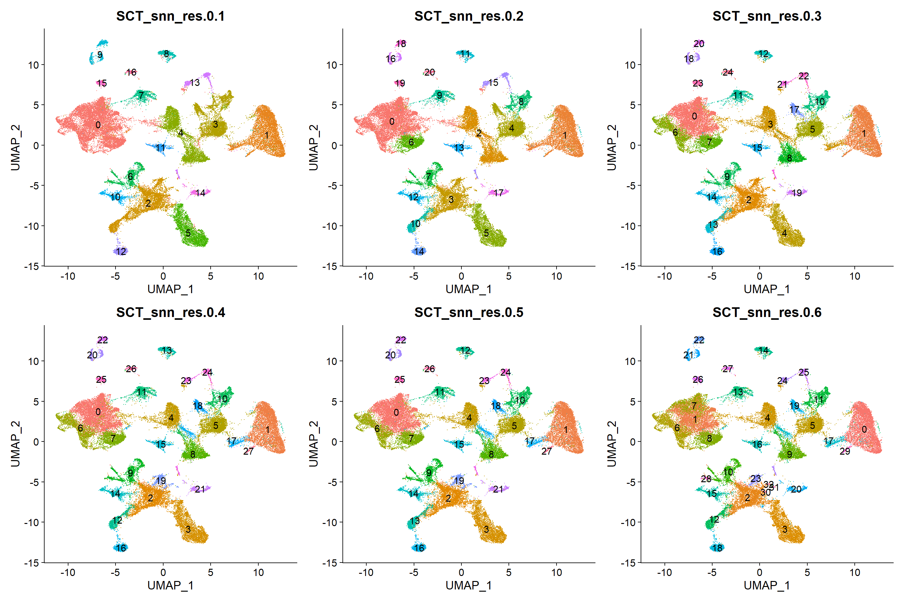
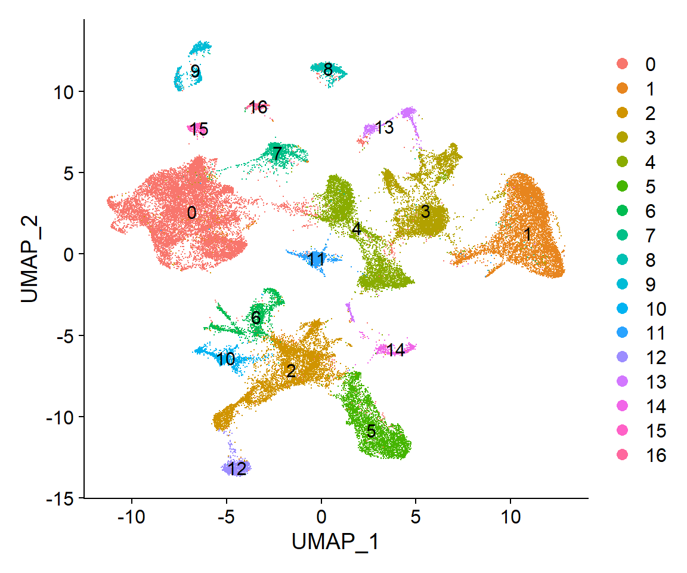
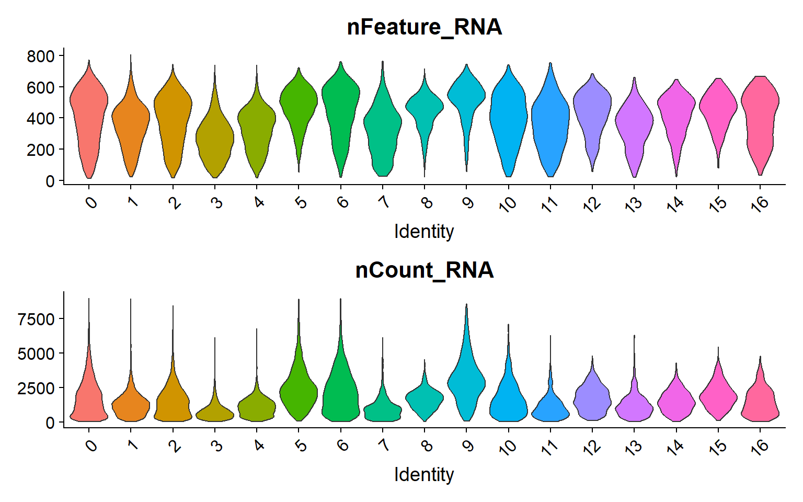
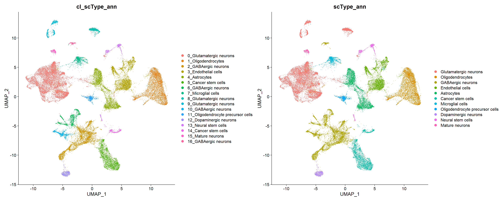
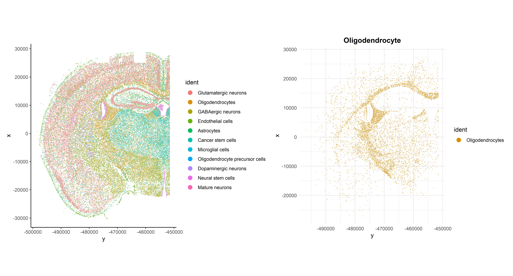
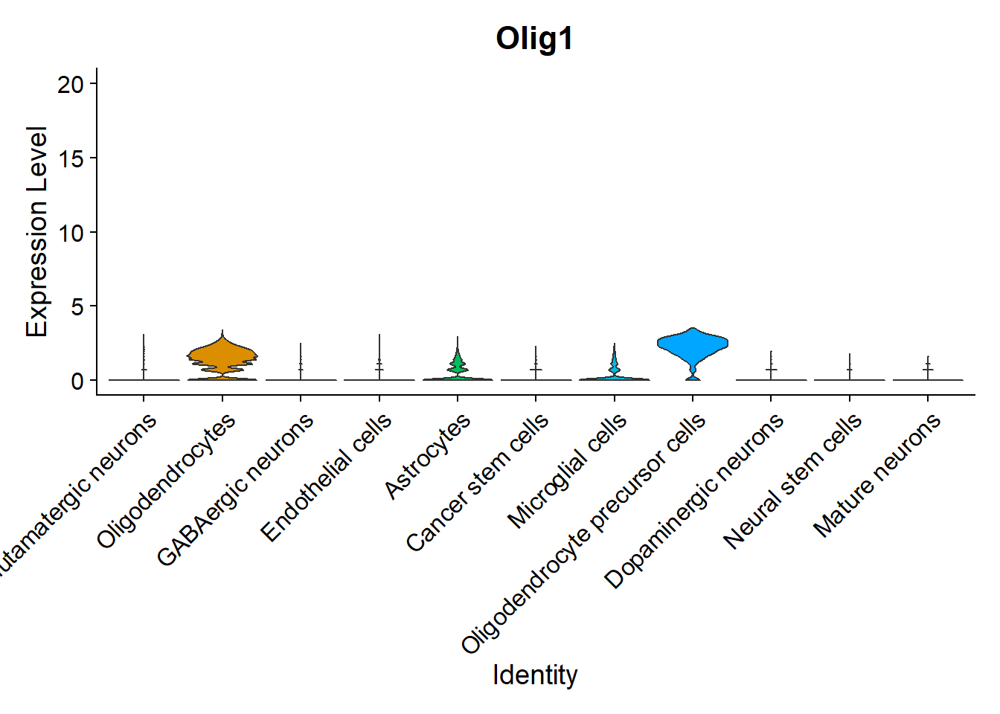
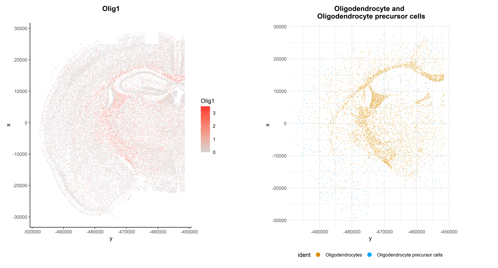

CosMx Data Seurat Unsupervised Clustering and scType annotation
LGA
03 septiembre 2025
Last updated: 2025-09-03
Checks: 7 0
Knit directory: CosMx_pipeline_LGA/
This reproducible R Markdown analysis was created with workflowr (version 1.7.1). The Checks tab describes the reproducibility checks that were applied when the results were created. The Past versions tab lists the development history.
Great! Since the R Markdown file has been committed to the Git repository, you know the exact version of the code that produced these results.
Great job! The global environment was empty. Objects defined in the global environment can affect the analysis in your R Markdown file in unknown ways. For reproduciblity it’s best to always run the code in an empty environment.
The command set.seed(20250517) was run prior to running
the code in the R Markdown file. Setting a seed ensures that any results
that rely on randomness, e.g. subsampling or permutations, are
reproducible.
Great job! Recording the operating system, R version, and package versions is critical for reproducibility.
Nice! There were no cached chunks for this analysis, so you can be confident that you successfully produced the results during this run.
Great job! Using relative paths to the files within your workflowr project makes it easier to run your code on other machines.
Great! You are using Git for version control. Tracking code development and connecting the code version to the results is critical for reproducibility.
The results in this page were generated with repository version cc8470c. See the Past versions tab to see a history of the changes made to the R Markdown and HTML files.
Note that you need to be careful to ensure that all relevant files for
the analysis have been committed to Git prior to generating the results
(you can use wflow_publish or
wflow_git_commit). workflowr only checks the R Markdown
file, but you know if there are other scripts or data files that it
depends on. Below is the status of the Git repository when the results
were generated:
Ignored files:
Ignored: .Rhistory
Ignored: .Rproj.user/
Ignored: NBClust-Plots/
Ignored: analysis/.Rhistory
Ignored: data/flatFiles/CoronalHemisphere/Run1000_S1_Half_exprMat_file.csv
Ignored: data/flatFiles/CoronalHemisphere/Run1000_S1_Half_fov_positions_file.csv
Ignored: data/flatFiles/CoronalHemisphere/Run1000_S1_Half_metadata_file.csv
Ignored: output/processed_data/Log/
Ignored: output/processed_data/RC/
Ignored: output/processed_data/SCT/
Ignored: output/processed_data/exprMat_unfiltered.RDS
Ignored: output/processed_data/fov_positions_unfiltered.RDS
Ignored: output/processed_data/metadata_unfiltered.RDS
Ignored: output/processed_data/negMat_unfiltered.RDS
Ignored: output/processed_data/seu_filtered.RDS
Ignored: output/processed_data/seu_semifiltered.RDS
Unstaged changes:
Modified: CosMx_pipeline_LGA.Rproj
Modified: output/performance_reports/0.0_data_loading_PR.csv
Modified: output/performance_reports/1.0_qc_and_filtering_PR.csv
Modified: output/performance_reports/2.0_normalization_PR.csv
Modified: output/performance_reports/3.0_dimensional_reduction_PR.csv
Modified: output/performance_reports/4.0_insitutype_cell_typing_PR.csv
Modified: output/performance_reports/4.1_insitutype_unsup_clustering_PR.csv
Deleted: output/performance_reports/4.2_seurat_unsup_clustering_PR.csv
Deleted: output/performance_reports/5.0_RC_normalization_PR.csv
Deleted: output/performance_reports/5.1_RC_dimensional_reduction_PR.csv
Deleted: output/performance_reports/6.0_Log_normalization_PR.csv
Deleted: output/performance_reports/6.1_Log_dimensional_reduction_PR.csv
Deleted: output/performance_reports/pipeline_PR.csv
Note that any generated files, e.g. HTML, png, CSS, etc., are not included in this status report because it is ok for generated content to have uncommitted changes.
These are the previous versions of the repository in which changes were
made to the R Markdown
(analysis/4.2_seurat_unsup_clustering.Rmd) and HTML
(docs/4.2_seurat_unsup_clustering.html) files. If you’ve
configured a remote Git repository (see ?wflow_git_remote),
click on the hyperlinks in the table below to view the files as they
were in that past version.
| File | Version | Author | Date | Message |
|---|---|---|---|---|
| html | 43970ac | lga-uoc | 2025-09-02 | Build site. |
| Rmd | 78c8449 | lga-uoc | 2025-09-02 | Add Rmds files in analysis |
Dependencies
library(data.table) # Efficient data management
library(here) # Enhanced file referencing in project-oriented workflows
library(dplyr) # For the use of pipes %>%
library(kableExtra) # For table formatting
library(Seurat) # Seurat object
library(ggplot2) # Graphics
library(patchwork) # Layout graphics
library(clustree) # Plot cluster resolutions
library(HGNChelper) # For scType annotationLoad the data
First of all, data needs to be loaded into the session. For this script, only the Seurat object is needed.
The Seurat package provides an unsupervised cell clustering method, where cells clusters are identified based in the shared nearest neighbor (SNN) and calculated via Louvain algorithm for modularity optimization.
# Indicate the object folder
folder <- "SCT" # Choose between "RC", "Log" or "SCT"
if (!folder %in% c("RC", "Log", "SCT")) {
stop("The selected folder is invalid, choose: 'RC', 'Log' or 'SCT'")
}
# Load Seurat object
name <- paste0("seu_", folder, "_um.RDS")
seu <- readRDS(here("output","processed_data",folder,name))
# Load the number of PCs used for dimensional reduction
name <- paste0("npcs_", folder, ".RDS")
npcs <- readRDS(here("output","processed_data",folder,name))Clustering with Seurat-Louvain
First, the SNN graph is constructed using the “FindNeighbors” function by Seurat. Then, “FindClusters” function is apply to identify clusters based on the SNN graph. For this step, it is usually recommended to check different resolutions and explore the results to select the more biologically meaningful number of clusters.
This method is used in the CosMxLite vignette, where a resolution < 1.0 is suggested for CosMx data. However, note that it was developed for single-cell genomic data and only utilities gene expression information for clustering.
## Code inspired by CosMxLite vignette
# Find Neighbors
seu <- FindNeighbors(seu, reduction = "pca", dims = 1:npcs) # Same PCs as in UMAP
# Cluster at different resolutions
resolutions <- seq(0.1, 0.6, by = 0.1) # Change range if needed
seu <- FindClusters(seu, resolution = resolutions, verbose = FALSE)Resolutions exploration
To examine different cluster resolutions there are different approaches, this pipeline will follow CosMxLite procedure and perform a “Clustree” plot and a UMAP cluster representation comparison.
## Code adapted from CosMxLite vignette
# Set resolution slot prefix depending on normalization
if (folder == "SCT") {
slot <- "SCT"
} else {
slot <- "RNA"
}
prefix <- paste0(slot,"_snn_res.")
# Inspect clustering resolutions
clustree(seu, prefix = prefix, return = "plot")
| Version | Author | Date |
|---|---|---|
| 43970ac | lga-uoc | 2025-09-02 |
The “Clustree” plot shows the number and size of clusters at each resolution and how they change with increasing resolutions. In this example, it can be observed that, in general, most cell groups are very defined from the beginning and remain very stable with growing resolutions. So the right choice here could be based on the level of detailed desired or having a look at the UMAP plots.
## Code inspired by CosMxLite vignette
# Inspect UMAP clustering resolutions
plots <- lapply(resolutions, function(res) {
DimPlot(seu, reduction = "umap", label = TRUE, raster = FALSE, group.by = paste0(prefix, res)) + NoLegend()
})
# Arrange plots
wrap_plots(plots, ncol = 3)
| Version | Author | Date |
|---|---|---|
| 43970ac | lga-uoc | 2025-09-02 |
In sight of the UMAP representations, the 0.1 resolution could be a good fit if not a great level of detail is needed, while higher resolutions seem to differentiate sub-populations. For this example, resolution of 0.1 seems enough.
## Code adapted from CosMxLite vignette
# Select a resolution
res_select <- 0.1 # Change if needed
res_select_name <- paste0(prefix,res_select)
# Set the selected resolution as default
Idents(seu) <- seu@meta.data[[paste0(prefix,res_select)]]
seu$seurat_clusters <- seu@meta.data[[paste0(prefix,res_select)]]Clustering visualizations
Now that the selected resolution has been established as the reference clustering os the Seurat object, some visualizations are useful to further inspect the resulting clusters:
# Create custom color palette
n <- length(unique(Idents(seu)))
cols <- gg_color_hue(n)
# DimPlot of selected resolution
clus_plot <- DimPlot(seu, reduction = "umap", label = TRUE,
cols = cols, raster = FALSE)
clus_plot
| Version | Author | Date |
|---|---|---|
| 43970ac | lga-uoc | 2025-09-02 |
Finally, the visualization of “nFeature” and “nCount” allows to identify clusters with better/lower representation by the CosMx panel.
## Code adapted from CosMxLite vignette
## Points are removed as CosMx datasets can contain over 1 million cells and may hide the violin plot
# Violin plot
VlnPlot(seu, features = c("nFeature_RNA", "nCount_RNA"), ncol = 1, pt.size = 0,
group.by = "seurat_clusters")
| Version | Author | Date |
|---|---|---|
| 43970ac | lga-uoc | 2025-09-02 |
Cell annotation - scType
In this script, clusters will be annotated based on their top markers using the “scType” package and its “Brain” reference. For more information about this method check its documentation and vignette here.
## Code adapted from scType vignette
# Load gene set preparation and cell type annotation function
source("https://raw.githubusercontent.com/IanevskiAleksandr/sc-type/master/R/gene_sets_prepare.R")
source("https://raw.githubusercontent.com/IanevskiAleksandr/sc-type/master/R/sctype_score_.R")
# Prepare DB file and select tissue
db_ <- "https://raw.githubusercontent.com/IanevskiAleksandr/sc-type/master/ScTypeDB_full.xlsx";
tissue <- "Brain" # e.g. Immune system, Pancreas, Liver, Kidney, Brain...
# Prepare gene sets
gs_list <- gene_sets_prepare(db_, tissue)
# Extract scaled data from the Seurat object
scaled_data <- as.matrix(seu[[paste0(slot)]]@scale.data) ## Code adapted from scType vignette
# Run ScType
es.max <- sctype_score(scaled_data, scaled = TRUE,
gs = gs_list$gs_positive,
gs2 = gs_list$gs_negative)
# Merge by cluster
cL_resutls <- do.call("rbind", lapply(unique(seu@meta.data$seurat_clusters), function(cl) {
es.max.cl = sort(rowSums(es.max[ ,rownames(seu@meta.data[seu@meta.data$seurat_clusters==cl, ])]),
decreasing = !0)
head(data.frame(cluster = cl, type = names(es.max.cl), scores = es.max.cl,
ncells = sum(seu@meta.data$seurat_clusters==cl)), 10)
}))
sctype_scores <- cL_resutls %>% group_by(cluster) %>% top_n(n = 1, wt = scores)
# Set low-confident (low ScType score) clusters to "unknown"
sctype_scores$type[as.numeric(as.character(sctype_scores$scores)) < sctype_scores$ncells/4] <- "Unknown"
## Self coded addition
# Maintain original cluster separation
sctype_scores$cl_type <- paste0(sctype_scores$cluster, "_", sctype_scores$type)
# Sort by cluster
sctype_scores <- sctype_scores %>% arrange(as.numeric(sctype_scores$cluster))
print(sctype_scores)# A tibble: 17 × 5
# Groups: cluster [17]
cluster type scores ncells cl_type
<fct> <chr> <dbl> <int> <chr>
1 0 Glutamatergic neurons 15086. 12635 0_Glutamatergic neurons
2 1 Oligodendrocytes 82687. 6968 1_Oligodendrocytes
3 2 GABAergic neurons 14000. 5649 2_GABAergic neurons
4 3 Endothelial cells 25512. 4855 3_Endothelial cells
5 4 Astrocytes 32477. 4760 4_Astrocytes
6 5 Cancer stem cells 5625. 3488 5_Cancer stem cells
7 6 GABAergic neurons 22993. 1693 6_GABAergic neurons
8 7 Microglial cells 15096. 1181 7_Microglial cells
9 8 Glutamatergic neurons 1227. 1085 8_Glutamatergic neurons
10 9 Glutamatergic neurons 2195. 1006 9_Glutamatergic neurons
11 10 GABAergic neurons 5532. 951 10_GABAergic neurons
12 11 Oligodendrocyte precursor cells 10030. 863 11_Oligodendrocyte pre…
13 12 Dopaminergic neurons 5848. 818 12_Dopaminergic neurons
14 13 Neural stem cells 1958. 804 13_Neural stem cells
15 14 Cancer stem cells 784. 558 14_Cancer stem cells
16 15 Mature neurons 361. 328 15_Mature neurons
17 16 GABAergic neurons 1467. 276 16_GABAergic neurons In this case the “Brain” database has confidently annotated all clusters and merged a few clusters that got the same label, for example, clusters 2, 6, 10 and 16 as GABAergic neurons, or 0, 8 and 9 as Glutamatergic neurons , and 5 and 14 as Cancer stem cells.
Add clustering to Seurat object
In order not to loose information, both the scType annotation and a “cluster+scType” annotation will be saved in the seurat object.
# Convert to data.frame and select columns
annot_df <- sctype_scores %>%
dplyr::select(cluster, type, cl_type) %>%
dplyr::mutate(cluster = as.character(cluster))
# Create named vectors for easy mapping
scType_ann <- setNames(annot_df$type, annot_df$cluster)
cl_scType_ann <- setNames(annot_df$cl_type, annot_df$cluster)
# Add new metadata columns to seurat object
seu$scType_ann <- factor(scType_ann[as.character(seu$seurat_clusters)],
levels = unique(annot_df$type))
seu$cl_scType_ann <- factor(cl_scType_ann[as.character(seu$seurat_clusters)],
levels = annot_df$cl_type)
# Set the scType annotation as default
Idents(seu) <- seu$scType_ann
seu$seurat_clusters <- seu$scType_ann# Save old custom palette for original clusters
n_cl <- n
cols_cl <- cols
# Create custom color palettes
n <- length(unique(Idents(seu)))
cols <- gg_color_hue(n)
# Inspect UMAP scType annotation
p1 <- DimPlot(seu, reduction = "umap", label = FALSE, raster = FALSE,
repel = TRUE, cols = cols_cl, group.by = "cl_scType_ann")
p2 <- DimPlot(seu, reduction = "umap", label = FALSE, raster = FALSE,
repel = TRUE, cols = cols, group.by = "scType_ann")
# Arrange plots
p1 + p2
| Version | Author | Date |
|---|---|---|
| 43970ac | lga-uoc | 2025-09-02 |
Final spatial visualizations
Now that cells have been annotated, visualizing them in their spatial context becomes more informative. For example, all cells can be visualized simultaneously in the sample or one cell type can be specifically highlighted:
## Code adapted from Seurat Spatial vignette
p1 <- ImageDimPlot(seu, fov = "globalFOV", axes = TRUE, cols = cols) +
theme_classic()
p2 <- ImageDimPlot(seu, fov = "globalFOV", axes = TRUE, cols = cols[2],
cells = WhichCells(seu, idents = "Oligodendrocytes")) +
ggtitle("Oligodendrocyte") +
theme_minimal() +
theme(plot.title = element_text(face = "bold", hjust = 0.5))
# Arrange plots
p1 + p2
| Version | Author | Date |
|---|---|---|
| 43970ac | lga-uoc | 2025-09-02 |
Another interesting visualization would be to plot gene expression markers in its spatial context. For example, one typical maker for Oligodendrocytes is Olig1:
## Code adapted from Seurat Spatial vignette
## Points are removed from violin plots as CosMx datasets can contain over 1 million cells and may hide the violin plot
VlnPlot(seu, features = "Olig1",pt.size = 0, y.max = 20) + NoLegend()
| Version | Author | Date |
|---|---|---|
| 43970ac | lga-uoc | 2025-09-02 |
As expected, it is highly expressed in Oligodendrocytes and Oligodendrocyte precursor cells, but it can also be observed in its spatial context:
## Code adapted from CosMxLite vignette
p1 <- ImageFeaturePlot(seu, fov = "globalFOV", features = "Olig1") +
theme_classic() +
theme(plot.title = element_text(face = "bold", hjust = 0.5))
p2 <- ImageDimPlot(seu, fov = "globalFOV", axes = TRUE,
cols = c(cols[2], cols[8]),
cells = WhichCells(seu,
idents = c("Oligodendrocytes",
"Oligodendrocyte precursor cells"))) +
ggtitle("Oligodendrocyte and \n Oligodendrocyte precursor cells") +
theme_minimal() +
theme(plot.title = element_text(face = "bold", hjust = 0.5),
legend.position = "bottom")
# Arrange plots
p1 + p2
| Version | Author | Date |
|---|---|---|
| 43970ac | lga-uoc | 2025-09-02 |
Performance and Session Info
Performance Report
| Chunk | Time_sec | Memory_Mb |
|---|---|---|
| Libraries | 1.81 | 150.6 |
| LoadData | 4.11 | 1214.2 |
| SNNClust | 45.87 | 61.2 |
| VizRes1 | 8.63 | 25.5 |
| VizRes2 | 8.08 | 58.2 |
| SetRes | 0.16 | 0.2 |
| VizClus1 | 1.52 | 11.2 |
| VizClus2 | 0.78 | 7.4 |
| scTypePrep | 0.78 | 17.0 |
| RunscType | 4.67 | 13.4 |
| AddAnn | 0.21 | 1.8 |
| VizAnn | 2.74 | 12.9 |
| SavingSeuObj_clus | 34.61 | 0.0 |
| SpatialViz | 3.35 | 11.9 |
| MarkerViz1 | 0.46 | 2.9 |
| SpatialViz2 | 3.53 | 8.3 |
| Total | 121.31 | 1596.7 |
R version 4.4.3 (2025-02-28 ucrt)
Platform: x86_64-w64-mingw32/x64
Running under: Windows 10 x64 (build 19045)
Matrix products: default
locale:
[1] LC_COLLATE=Spanish_Spain.utf8 LC_CTYPE=Spanish_Spain.utf8
[3] LC_MONETARY=Spanish_Spain.utf8 LC_NUMERIC=C
[5] LC_TIME=Spanish_Spain.utf8
time zone: Europe/Madrid
tzcode source: internal
attached base packages:
[1] stats graphics grDevices utils datasets methods base
other attached packages:
[1] HGNChelper_0.8.15 clustree_0.5.1 ggraph_2.2.1 patchwork_1.3.0
[5] ggplot2_3.5.1 SeuratObject_4.1.4 Seurat_4.4.0 kableExtra_1.4.0
[9] dplyr_1.1.4 here_1.0.1 data.table_1.17.0 workflowr_1.7.1
loaded via a namespace (and not attached):
[1] RColorBrewer_1.1-3 rstudioapi_0.17.1 jsonlite_1.8.9
[4] magrittr_2.0.3 spatstat.utils_3.1-5 farver_2.1.2
[7] rmarkdown_2.29 fs_1.6.5 vctrs_0.6.5
[10] ROCR_1.0-11 memoise_2.0.1 spatstat.explore_3.5-2
[13] htmltools_0.5.8.1 sass_0.4.9 sctransform_0.4.2
[16] parallelly_1.41.0 KernSmooth_2.23-26 bslib_0.8.0
[19] htmlwidgets_1.6.4 ica_1.0-3 plyr_1.8.9
[22] plotly_4.11.0 zoo_1.8-14 cachem_1.1.0
[25] whisker_0.4.1 igraph_2.1.2 mime_0.12
[28] lifecycle_1.0.4 pkgconfig_2.0.3 Matrix_1.7-2
[31] R6_2.5.1 fastmap_1.2.0 fitdistrplus_1.2-4
[34] future_1.34.0 shiny_1.10.0 digest_0.6.37
[37] colorspace_2.1-1 ps_1.8.1 rprojroot_2.0.4
[40] tensor_1.5.1 irlba_2.3.5.1 labeling_0.4.3
[43] progressr_0.15.1 spatstat.sparse_3.1-0 httr_1.4.7
[46] polyclip_1.10-7 abind_1.4-8 compiler_4.4.3
[49] withr_3.0.2 backports_1.5.0 viridis_0.6.5
[52] ggforce_0.4.2 MASS_7.3-64 splitstackshape_1.4.8
[55] tools_4.4.3 lmtest_0.9-40 zip_2.3.1
[58] httpuv_1.6.15 future.apply_1.11.3 goftest_1.2-3
[61] glue_1.8.0 callr_3.7.6 nlme_3.1-167
[64] promises_1.3.2 grid_4.4.3 checkmate_2.3.2
[67] Rtsne_0.17 getPass_0.2-4 cluster_2.1.8
[70] reshape2_1.4.4 generics_0.1.3 gtable_0.3.6
[73] spatstat.data_3.1-6 tidyr_1.3.1 utf8_1.2.4
[76] tidygraph_1.3.1 sp_2.2-0 xml2_1.3.6
[79] spatstat.geom_3.5-0 RcppAnnoy_0.0.22 ggrepel_0.9.6
[82] RANN_2.6.2 pillar_1.10.0 stringr_1.5.1
[85] later_1.4.1 splines_4.4.3 tweenr_2.0.3
[88] lattice_0.22-6 survival_3.8-3 deldir_2.0-4
[91] tidyselect_1.2.1 miniUI_0.1.1.1 pbapply_1.7-4
[94] knitr_1.49 git2r_0.36.2 gridExtra_2.3
[97] svglite_2.1.3 scattermore_1.2 xfun_0.49
[100] graphlayouts_1.2.2 matrixStats_1.4.1 stringi_1.8.4
[103] lazyeval_0.2.2 yaml_2.3.10 evaluate_1.0.1
[106] codetools_0.2-20 tibble_3.2.1 cli_3.6.3
[109] uwot_0.2.3 xtable_1.8-4 reticulate_1.40.0
[112] systemfonts_1.1.0 munsell_0.5.1 processx_3.8.4
[115] jquerylib_0.1.4 Rcpp_1.0.13-1 globals_0.16.3
[118] spatstat.random_3.4-1 png_0.1-8 spatstat.univar_3.1-4
[121] parallel_4.4.3 listenv_0.9.1 viridisLite_0.4.2
[124] scales_1.3.0 ggridges_0.5.6 openxlsx_4.2.8
[127] leiden_0.4.3.1 purrr_1.0.2 rlang_1.1.4
[130] cowplot_1.1.3